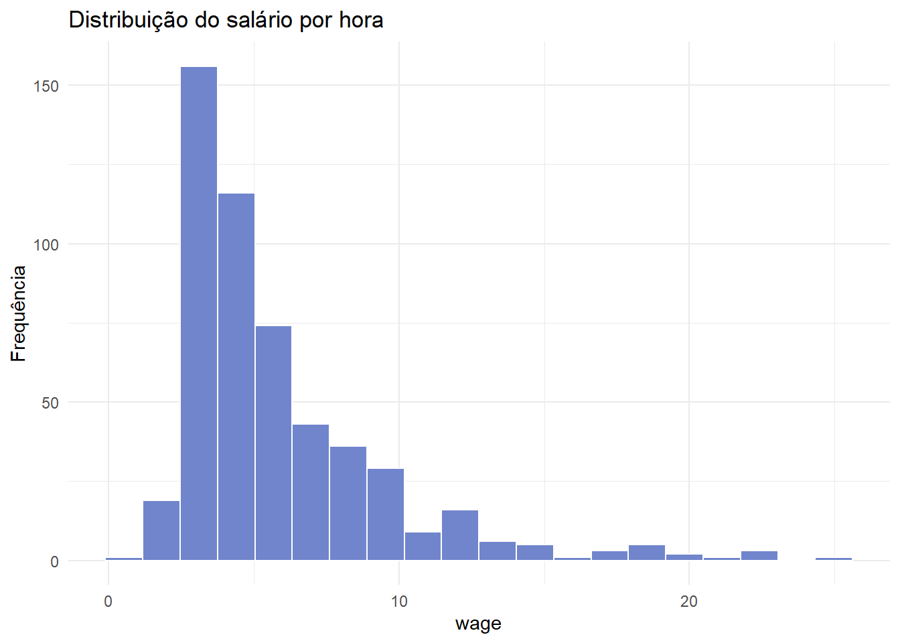
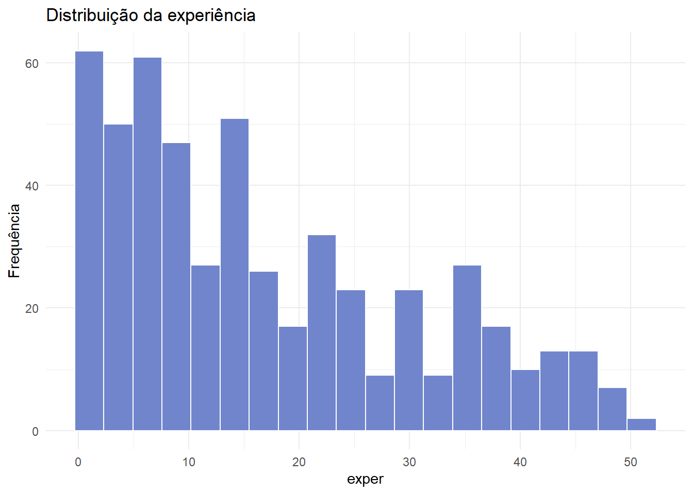

library(tidyverse)
wage1_core <- readRDS("dados/wage1_core.rds")25 Funções e reutilização de código
Transformando uma rotina em ferramenta
No capítulo anterior, repetimos a mesma rotina para diferentes variáveis. Agora transformaremos uma sequência de comandos em uma função.
Uma função recebe entradas, executa operações e devolve uma saída. Ela permite:
- evitar copiar e colar código;
- dar um nome a uma tarefa;
- corrigir a rotina em um único lugar;
- reaplicar a mesma regra;
- testar partes da análise separadamente;
- compartilhar procedimentos reproduzíveis.
NotaObjetivos do capítulo
Ao final deste capítulo, você deverá ser capaz de:
- reconhecer entradas, operações e saídas de uma função;
- criar funções com
function(); - definir argumentos e valores-padrão;
- devolver vetores, tabelas e gráficos;
- validar entradas e produzir mensagens de erro úteis;
- aplicar uma função a diferentes variáveis;
- utilizar
purrr::map_dfr()depois de compreender a lógica da repetição; - organizar funções reutilizáveis em um script.
25.1 Preparando a base
25.2 Funções que já utilizamos
Desde o início da apostila, utilizamos funções:
mean(wage1_core$wage)[1] 5.896103median(wage1_core$wage)[1] 4.65sd(wage1_core$wage)[1] 3.693086Cada função possui:
- um nome:
mean; - uma entrada:
wage1_core$wage; - argumentos adicionais, quando necessários;
- uma saída: a média calculada.
Ao escrever nossas próprias funções, organizamos tarefas da mesma maneira.
25.3 A estrutura de uma função
Uma função simples que dobra um valor pode ser escrita assim:
dobrar <- function(x) {
resultado <- 2 * x
return(resultado)
}Utilizamos a função como qualquer outra:
dobrar(5)[1] 10dobrar(c(1, 2, 3))[1] 2 4 6Na definição:
dobraré o nome escolhido;xé o argumento;- o código entre chaves forma o corpo;
return(resultado)indica a saída.
flowchart LR
A["Entrada<br/>argumentos"] --> B["Operações<br/>corpo da função"]
B --> C["Saída<br/>resultado"]
classDef etapa fill:#DCEBDC,stroke:#355E3B,color:#1F3323,stroke-width:1.5px;
class A,B,C etapa;
linkStyle default stroke:#355E3B,stroke-width:1.5px;
NotaCódigo Mermaid do fluxograma
flowchart LR
A["Entrada — argumentos"] --> B["Operações — corpo da função"]
B --> C["Saída — resultado"]
classDef etapa fill:#DCEBDC,stroke:#355E3B,color:#1F3323,stroke-width:1.5px;
class A,B,C etapa;
linkStyle default stroke:#355E3B,stroke-width:1.5px;25.4 Retorno explícito e implícito
O R devolve automaticamente o resultado da última expressão. Portanto, poderíamos escrever:
dobrar_curta <- function(x) {
2 * x
}
dobrar_curta(5)[1] 10return() é útil quando desejamos tornar a saída explícita ou encerrar a função antes do final.
25.5 Uma função econômica simples
O coeficiente de variação relaciona o desvio-padrão à média:
\[ CV=\frac{s}{\bar{x}}\times 100. \]
Nas notas anteriores, esse cálculo foi repetido manualmente. Podemos transformá-lo em função:
coeficiente_variacao <- function(x) {
sd(x) / mean(x) * 100
}
coeficiente_variacao(wage1_core$wage)[1] 62.63605coeficiente_variacao(wage1_core$educ)[1] 22.04155Agora a fórmula está registrada em um único lugar.
25.6 Argumentos com valores-padrão
Se houver valores ausentes, mean() e sd() podem devolver NA. Acrescentamos o argumento na.rm, com valor-padrão TRUE:
coeficiente_variacao <- function(x, na.rm = TRUE) {
sd(x, na.rm = na.rm) /
mean(x, na.rm = na.rm) * 100
}O usuário pode aceitar o padrão:
coeficiente_variacao(wage1_core$wage)[1] 62.63605ou alterá-lo:
vetor_com_na <- c(2, 4, NA, 8)
coeficiente_variacao(
vetor_com_na,
na.rm = FALSE
)[1] NA
DicaValores-padrão devem representar uma escolha consciente
Um padrão torna a função conveniente, mas também incorpora uma decisão. Remover NA, por exemplo, precisa ser adequado ao problema analisado.
25.7 Uma função para estatísticas descritivas
O seu material anterior utilizava uma função chamada fun1 para calcular várias medidas. Preservaremos a ideia com um nome mais informativo:
resumo_numerico <- function(x, na.rm = TRUE) {
tibble(
observacoes = sum(!is.na(x)),
media = mean(x, na.rm = na.rm),
mediana = median(x, na.rm = na.rm),
variancia = var(x, na.rm = na.rm),
desvio_padrao = sd(x, na.rm = na.rm),
minimo = min(x, na.rm = na.rm),
maximo = max(x, na.rm = na.rm)
)
}Aplicamos a função ao salário:
resumo_numerico(wage1_core$wage)# A tibble: 1 × 7
observacoes media mediana variancia desvio_padrao minimo maximo
<int> <dbl> <dbl> <dbl> <dbl> <dbl> <dbl>
1 526 5.90 4.65 13.6 3.69 0.530 25.0E à escolaridade:
resumo_numerico(wage1_core$educ)# A tibble: 1 × 7
observacoes media mediana variancia desvio_padrao minimo maximo
<int> <dbl> <dbl> <dbl> <dbl> <int> <int>
1 526 12.6 12 7.67 2.77 0 1825.8 Validando a entrada
A função resumo_numerico() pressupõe um vetor numérico. Se receber texto, produzirá uma mensagem pouco clara. Podemos verificar a entrada:
resumo_numerico <- function(x, na.rm = TRUE) {
if (!is.numeric(x)) {
stop("`x` deve ser um vetor numérico.")
}
if (length(x) == 0) {
stop("`x` não pode ser vazio.")
}
tibble(
observacoes = sum(!is.na(x)),
media = mean(x, na.rm = na.rm),
mediana = median(x, na.rm = na.rm),
variancia = var(x, na.rm = na.rm),
desvio_padrao = sd(x, na.rm = na.rm),
minimo = min(x, na.rm = na.rm),
maximo = max(x, na.rm = na.rm)
)
}Testamos uma entrada válida:
resumo_numerico(wage1_core$exper)# A tibble: 1 × 7
observacoes media mediana variancia desvio_padrao minimo maximo
<int> <dbl> <dbl> <dbl> <dbl> <int> <int>
1 526 17.0 13.5 184. 13.6 1 51O comando abaixo produziria um erro planejado e informativo:
resumo_numerico(c("Homem", "Mulher"))
ImportanteUma boa mensagem de erro ajuda a usar a função
stop() interrompe a execução quando uma condição necessária não foi atendida. A mensagem deve informar qual entrada está incorreta e o que era esperado.
25.9 Aplicando a função com um loop
Retomamos a lista de variáveis do capítulo anterior:
variaveis <- c("wage", "educ", "exper", "tenure")
resumos <- tibble()
for (variavel in variaveis) {
resumo_atual <- resumo_numerico(
wage1_core[[variavel]]
) |>
mutate(
variavel = variavel,
.before = 1
)
resumos <- bind_rows(
resumos,
resumo_atual
)
}
resumos# A tibble: 4 × 8
variavel observacoes media mediana variancia desvio_padrao minimo maximo
<chr> <int> <dbl> <dbl> <dbl> <dbl> <dbl> <dbl>
1 wage 526 5.90 4.65 13.6 3.69 0.530 25.0
2 educ 526 12.6 12 7.67 2.77 0 18
3 exper 526 17.0 13.5 184. 13.6 1 51
4 tenure 526 5.10 2 52.2 7.22 0 44 Agora o loop cuida da repetição e a função concentra a operação.
25.10 Aplicando a função com purrr
O pacote purrr, integrante do tidyverse, oferece funções para aplicar uma operação repetidamente. map_dfr() percorre as entradas e combina os resultados por linhas:
resumos_map <- map_dfr(
variaveis,
function(variavel) {
resumo_numerico(
wage1_core[[variavel]]
) |>
mutate(
variavel = variavel,
.before = 1
)
}
)
resumos_map# A tibble: 4 × 8
variavel observacoes media mediana variancia desvio_padrao minimo maximo
<chr> <int> <dbl> <dbl> <dbl> <dbl> <dbl> <dbl>
1 wage 526 5.90 4.65 13.6 3.69 0.530 25.0
2 educ 526 12.6 12 7.67 2.77 0 18
3 exper 526 17.0 13.5 184. 13.6 1 51
4 tenure 526 5.10 2 52.2 7.22 0 44 O raciocínio é o mesmo do for:
- receber um nome de variável;
- extrair a coluna;
- aplicar
resumo_numerico(); - incluir o nome da variável;
- reunir as tabelas.
Nota
map() não torna o código automaticamente melhor
Use map() quando sua forma tornar a intenção mais clara. Um for bem escrito continua sendo uma solução correta, legível e pedagógica.
25.11 Uma função que recebe uma base e uma variável
Podemos construir uma função mais geral usando o nome da coluna como texto:
resumir_variavel <- function(dados, variavel, na.rm = TRUE) {
if (!variavel %in% names(dados)) {
stop("A variável informada não existe na base.")
}
valores <- dados[[variavel]]
resumo_numerico(
valores,
na.rm = na.rm
) |>
mutate(
variavel = variavel,
.before = 1
)
}Agora informamos a base e o nome da variável:
resumir_variavel(
wage1_core,
"wage"
)# A tibble: 1 × 8
variavel observacoes media mediana variancia desvio_padrao minimo maximo
<chr> <int> <dbl> <dbl> <dbl> <dbl> <dbl> <dbl>
1 wage 526 5.90 4.65 13.6 3.69 0.530 25.0Essa forma facilita reaplicar a rotina em outras bases que possuam uma variável numérica.
25.12 Uma função que produz um gráfico
Uma função também pode devolver um objeto do ggplot2:
grafico_distribuicao <- function(dados, variavel, titulo = NULL) {
if (!variavel %in% names(dados)) {
stop("A variável informada não existe na base.")
}
if (!is.numeric(dados[[variavel]])) {
stop("A variável deve ser numérica.")
}
ggplot(
dados,
aes(x = .data[[variavel]])
) +
geom_histogram(
bins = 20,
fill = "#7185CC",
color = "white"
) +
labs(
title = titulo,
x = variavel,
y = "Frequência"
) +
theme_minimal()
}Utilizamos a mesma função para variáveis diferentes:
grafico_distribuicao(
wage1_core,
"wage",
"Distribuição do salário por hora"
)
grafico_distribuicao(
wage1_core,
"exper",
"Distribuição da experiência"
)
.data[[variavel]] informa ao ggplot2 que o nome da coluna está guardado no objeto variavel.
25.13 Preservando uma função do material anterior
O material antigo também definia uma função para calcular a moda. Vamos reescrevê-la de maneira legível:
calcular_moda <- function(x, na.rm = TRUE) {
if (na.rm) {
x <- x[!is.na(x)]
}
valores_unicos <- unique(x)
frequencias <- tabulate(
match(x, valores_unicos)
)
valores_unicos[which.max(frequencias)]
}
calcular_moda(wage1_core$educ)[1] 12
AvisoPode existir mais de uma moda
Essa função devolve apenas o primeiro valor com frequência máxima. Se diferentes valores estiverem empatados, uma função mais completa deveria devolver todos eles.
25.14 Organizando funções em um script
Em um projeto maior, podemos guardar funções em um arquivo como:
script/funcoes.RDepois, carregamos as definições com:
source("script/funcoes.R")Uma organização possível é:
projeto/
├── dados/
├── script/
│ ├── funcoes.R
│ └── analise.R
├── figuras/
└── resultados/O arquivo funcoes.R contém as ferramentas reutilizáveis. O arquivo analise.R carrega os dados e utiliza essas funções na sequência específica do problema.
25.15 Da repetição à reutilização
flowchart LR
A["Código repetido"] --> B["Loop"]
B --> C["Função"]
C --> D["Validação"]
D --> E["Reutilização"]
E --> F["Automação<br/>reproduzível"]
classDef etapa fill:#DCEBDC,stroke:#355E3B,color:#1F3323,stroke-width:1.5px;
class A,B,C,D,E,F etapa;
linkStyle default stroke:#355E3B,stroke-width:1.5px;
NotaCódigo Mermaid do fluxograma
flowchart LR
A["Código repetido"] --> B["Loop"]
B --> C["Função"]
C --> D["Validação"]
D --> E["Reutilização"]
E --> F["Automação reproduzível"]
classDef etapa fill:#DCEBDC,stroke:#355E3B,color:#1F3323,stroke-width:1.5px;
class A,B,C,D,E,F etapa;
linkStyle default stroke:#355E3B,stroke-width:1.5px;Uma função útil não precisa ser sofisticada. Ela deve representar uma tarefa bem definida, possuir entradas claras, devolver um resultado previsível e produzir erros compreensíveis quando não puder executar a tarefa.
25.16 Pratique
- Crie uma função chamada
amplitude()que calcule máximo menos mínimo. - Acrescente o argumento
na.rm. - Faça a função verificar se o vetor é numérico.
- Aplique a função a
wage,educ,experetenure. - Guarde os resultados em uma tabela usando
for. - Refaça a aplicação com
map_dfr(). - Crie uma função que produza um boxplot para uma variável numérica.
DicaCódigo inicial
amplitude <- function(x, na.rm = TRUE) {
if (!is.numeric(x)) {
stop("`x` deve ser numérico.")
}
max(x, na.rm = na.rm) -
min(x, na.rm = na.rm)
}
amplitude(wage1_core$wage)[1] 24.45Ao final desta parte, reunimos ferramentas para tomar decisões, repetir operações e criar funções. Essas competências poderão ser mobilizadas pelos grupos na construção dos tutoriais aplicados, sempre partindo de um problema econômico e documentando um procedimento que outras pessoas consigam reproduzir.